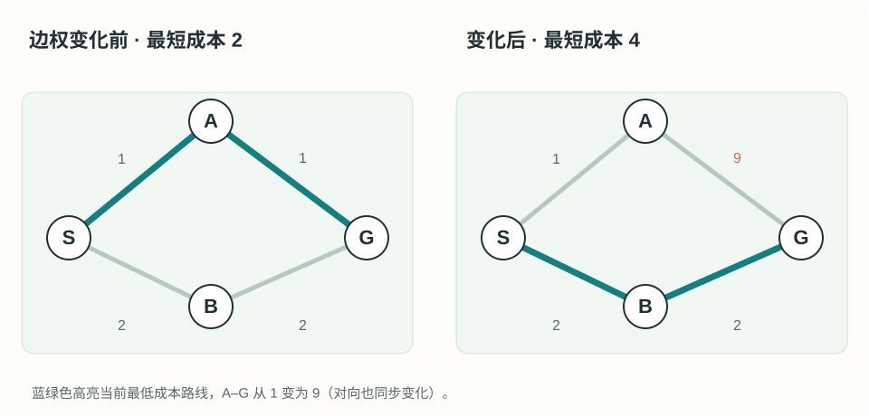
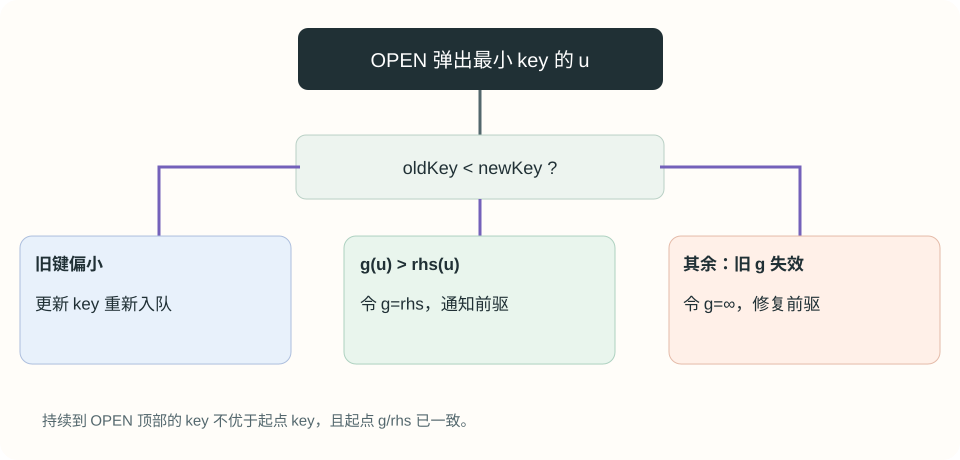

D* Lite：地图变化后如何修复旧路径
关键不是每次都重新找路，而是保存哪些距离已可信、哪些状态与最新地图不一致。从目标反向传播 g/rhs，看到局部变化如何影响路线。
障碍变化时，为什么不总是从头搜索
设机器人从起点 S 去目标 G。当前最短路线穿过 A，但新的传感器发现 A→G 的路段变得难走。如果地图发生局部变化，每次都丢弃全部距离信息并从 S 重新执行 A*，可能浪费已经计算过的大量状态。
D* Lite（Koenig 与 Likhachev，2002）将 Lifelong Planning A* 的增量思想应用到机器人探索未知地形：让旧搜索保存每个状态的成本估计，在局部边权改变时，只把必要的不一致信息沿相关前驱传播，直至新的起点路径条件得到满足。它与早期 D* 的历史名称相近，但算法结构不相同。
INCREMENTAL PLANNING · 09

g 与 rhs：两种成本为何不能只留一个
D* Lite 通常从目标 G 反向传播：g(u) 是之前已计算的从 u 到目标的成本估计，rhs(u) 是基于其相邻后继 g 值重新计算的一步前瞻成本。初始化时所有 g=∞，目标 rhs(G)=0，其余 rhs=∞。
当 g(u)=rhs(u) 时，这个状态是局部一致的；不相等则需要被修复。若 g>rhs，表示发现了更便宜的一步前瞻，需要降低 g；若 g<rhs，表示此前保存的 g 可能已经过于乐观，要将其失效并重新传播。
一个很容易写错的细节：rhs(u) 是对 u 的后继 Succ(u) 求最小，而每当 u 的 g 改变，应通知其前驱 Pred(u)。对于有向图，前驱和后继不是相同集合。
INCREMENTAL PLANNING · 09

两项优先级 key 与 k_m 是什么
队列按字典序比较两个数值，不是把它们加在一起：先比较第一项，再用第二项打破平局。令 m=min(g(u),rhs(u))，D* Lite 的常用键为：
第一项在最小的 g/rhs 基础上加入“从当前起点到 u 的一致启发式下界”与偏移 k_m，第二项是 m。因为规划信息从目标向起点传播，当机器人沿边移动时起点变了，旧队列的键需要通过 km 调整，避免每一步都整体重建所有队列条目。
km 的更新常写作 km += h(s_last, s_start)。如果用零启发式，km 会始终为 0，此时算法仍保持增量性质，但失去定向搜索优势。要用非零启发式，需保证它与各边成本相容（例如代价至少为所选几何距离）。
从目标反向传播的三个修复动作
初始把目标放入 OPEN。反复执行直到 OPEN 的最小键不小于起点键，并且起点已经局部一致。在每次弹出有效条目后进行三选一：
- 如果保存的旧键小于重新计算的当前键，更新优先级并重新插入。
- 如果
g(u)>rhs(u)，设g(u)=rhs(u)，将变更传播给所有前驱。 - 否则旧 g 已不适合，先置
g(u)=∞，再更新 u 与前驱的 rhs。
INCREMENTAL PLANNING · 09

这与“再次执行 A*”的区别在于：没有变化的其他节点能保留已经有用的 g/rhs，只有受影响范围被插入待修复队列。但具体能节省多少搜索取决于变化范围与地图拓扑，不能凭例子宣称某个固定倍数。
一个路段从 1 变成 9，图上发生了什么
初始图 S–A=1、A–G=1、S–B=2、B–G=2。目标反向给出 g(G)=0，g(A)=1，g(S)=2。机器人从 S 出发会选 S→A→G，总成本 2。
当 A–G 边权上升到 9 时，A 原先的一步前瞻值失效，rhs(A) 重新计算。A 可能沿 A→S→B→G 绕到目标，但 S 最直接的候选是 S→B→G，成本 4。算法应传播受到影响的修复，最终得到新路线成本 4。
我们的示例用无向图，因此更改 A↔G 路段需要分别更新 A→G 和 G→A 两条有向边。若某个道路只有单方向可通行，不能因为地图看似对称就修改不存在的反向边。注意 demo 的 g/rhs 表是静态教学示意，动态数值以代码实际计算为准。
最小而真实的 D* Lite 修复循环
下面实现包含 g、rhs、前驱、二元 key、lazy deletion OPEN、边权更新、起点移动、km 累积和路径恢复。它只支持固定节点/边拓扑上的非负边权变化，使用一致的曼哈顿启发式（示例边长满足对应下界）；不是支持任意插入/删除节点的生产级规划器。
Python 3.10+，无第三方依赖。三个断言分别验证：初始路径成本 2；把 A↔G 的边权升高后重新规划成本 4；机器人移动到 B 后，从新起点到 G 的剩余成本是 2。尤其注意最后一步会触发 km 更新，而不是从头初始化。
from heapq import heappush, heappop
from math import inf
class DStarLite:
"""小规模固定拓扑图；边权可变，距离必须非负。"""
def __init__(self, graph, xy, start, goal):
self.adj = {u: dict(edges) for u, edges in graph.items()}
self.xy = xy
self.start, self.goal, self.last = start, goal, start
self.g = {u: inf for u in self.adj}
self.rhs = {u: inf for u in self.adj}
self.rhs[goal] = 0
self.km = 0
self.heap, self.open, self.seq = [], {}, 0
self.pred = {u: set() for u in self.adj}
for u, edges in self.adj.items():
for v, cost in edges.items():
if cost < 0: raise ValueError("negative edge")
self.pred[v].add(u)
self.push(goal)
def h(self, a, b):
return sum(abs(x-y) for x, y in zip(self.xy[a], self.xy[b]))
def key(self, u):
m = min(self.g[u], self.rhs[u])
return (m + self.h(self.start, u) + self.km, m)
def push(self, u):
k = self.key(u)
self.open[u] = k
self.seq += 1
heappush(self.heap, (k[0], k[1], self.seq, u))
def peek(self):
while self.heap:
a, b, _, u = self.heap[0]
if self.open.get(u) == (a, b): return (a, b)
heappop(self.heap) # 丢弃作废的堆项
return (inf, inf)
def pop(self):
self.peek()
a, b, _, u = heappop(self.heap)
self.open.pop(u, None)
return (a, b), u
def update(self, u):
if u != self.goal:
self.rhs[u] = min(
(w + self.g[v] for v, w in self.adj[u].items()),
default=inf)
self.open.pop(u, None)
if self.g[u] != self.rhs[u]: self.push(u)
def compute(self):
count = 0
while (self.peek() < self.key(self.start)
or self.rhs[self.start] != self.g[self.start]):
old, u = self.pop()
new = self.key(u)
if old < new:
self.push(u)
elif self.g[u] > self.rhs[u]:
self.g[u] = self.rhs[u]
for p in self.pred[u]: self.update(p)
else:
self.g[u] = inf
self.update(u)
for p in self.pred[u]: self.update(p)
count += 1
return count
def plan(self):
expanded = self.compute()
if self.g[self.start] == inf: return None, inf, expanded
u, path, total = self.start, [self.start], 0
while u != self.goal:
score, v, cost = min(
(w+self.g[v], v, w) for v, w in self.adj[u].items())
if score == inf or v in path:
raise RuntimeError("No consistent successor path")
total += cost
path.append(v)
u = v
return path, total, expanded
def change(self, u, v, cost):
"""更改现有的一条有向边；无向图两方向分别调用。"""
if cost < 0: raise ValueError("negative edge")
if v not in self.adj[u]: raise ValueError("unknown edge")
self.adj[u][v] = cost
self.update(u)
def move(self, to):
"""机器人沿现有边移动；更新启发式键的偏移量。"""
if to not in self.adj[self.start]:
raise ValueError("move must follow a known edge")
self.km += self.h(self.last, to)
self.start = self.last = to
graph = {
"S": {"A": 1, "B": 2},
"A": {"S": 1, "G": 1},
"B": {"S": 2, "G": 2},
"G": {"A": 1, "B": 2},
}
xy = {"S": (0,0), "A": (1,0), "B": (0,1), "G": (1,1)}
planner = DStarLite(graph, xy, "S", "G")
first = planner.plan()
assert first[:2] == (["S", "A", "G"], 2)
planner.change("A", "G", 9)
planner.change("G", "A", 9) # 无向路段需更新双向
after_change = planner.plan()
assert after_change[:2] == (["S", "B", "G"], 4)
planner.move("B")
after_move = planner.plan()
assert after_move[:2] == (["B", "G"], 2)
print("before:", first[:2], "after:", after_change[:2],
"after moving:", after_move[:2])代码没有并发地图同步、感知延迟、负权处理、动态障碍时间预测，也没有报告所谓“增量比 A* 快的倍数”。它只证明上述小例子的状态修复结果可复现。
D* Lite 不是“动态世界无条件最优”
- 变化的是已知地图边权：对未来会移动的人或车辆，单张静态边权图无法完整描述时间维度。
- 旧 g/rhs 依赖同一个状态空间和代价语义：若换了足迹或车辆运动模型，不能盲目保留全部旧值。
- 启发式要一致：错误估计及单位混乱会破坏键的解释和终止保证。
- 边更新必须完整：漏改反向边或遗漏受影响前驱会导致旧路线残留。
- 重规划周期不等于控制安全：执行器仍需紧急制动与碰撞约束检查。
后续在真实 Nav2 或其它机器人系统中使用增量规划时，应该将规划器的状态复用与代价地图更新时间、TF、足迹和控制安全机制分别验证。